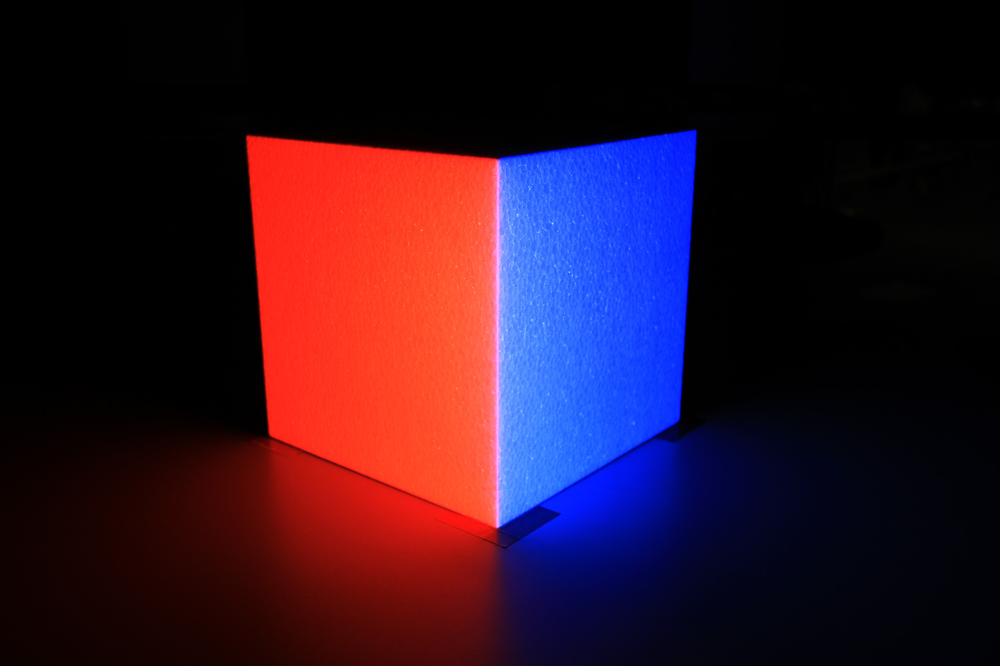
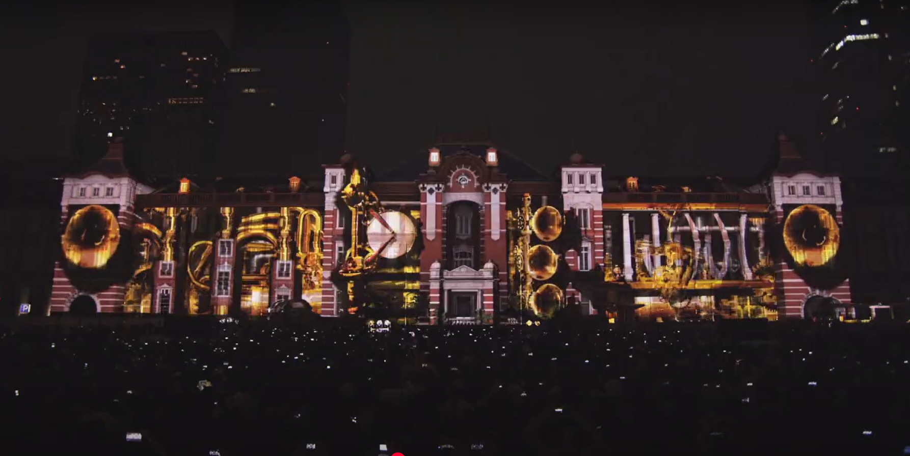
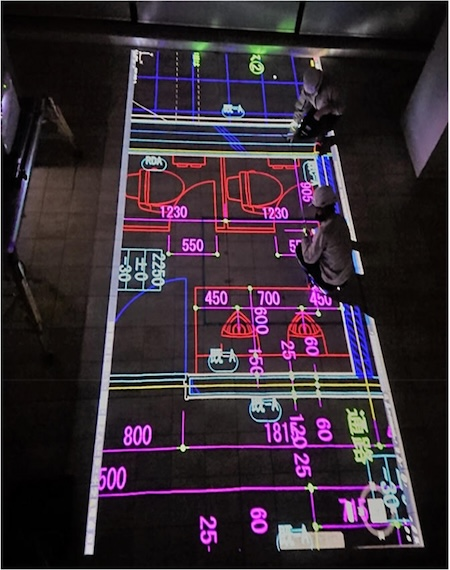

PROJECTION
MAPPING
ABOUT
プロジェクションマッピングとは
プロジェクションマッピングとは、実物と映像をシンクロさせる映像手法である。
建築物や立体物などの凹凸のある面に映像を投映し、実物と映像を融合させることで
物体が動いたり変形したり、自ら光を放っているように見せる幻想的な表現を実現する。
プロジェクションマッピングは投映が終わればすぐ原状復帰できるのも大きな特徴である。
建物に手を加える必要がないため、歴史的建造物などの演出をすることも適している。
01
方法論と比較
METHOD


「プロジェクションマッピング」
において使われている、
主な技術や方法論について
他の技術との比較をまとめる
02
歴史
HISTORY
「プロジェクションマッピング」の歴史についてまとめ、歴史と共に技術の移り変わりを深掘りする
 04
参考文献
REFERENCES